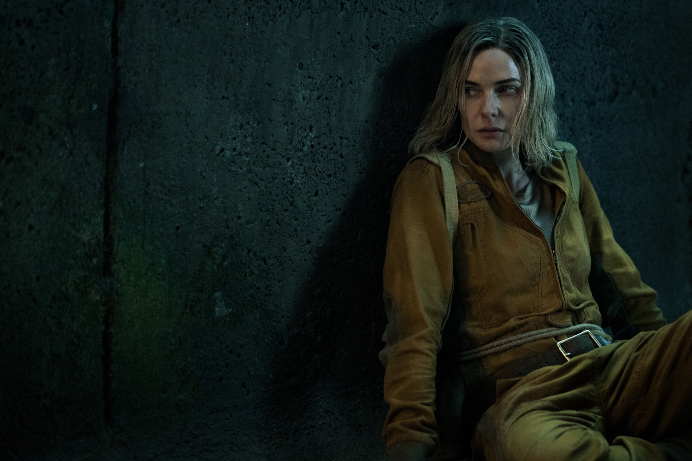

Dışarıda
ne var?
Yeraltında bir hayat. Dışarıya dair tek bir soru. Juliette’in dünyasına gir.
Konuşulan hikâyeler.
En popüler diziler
TVmaze popülerlik ağırlığına göre; eski ve yeni diziler bir arada.
Her platform,
başka bir evren.
Özgün yapımlar ve stüdyo seçkileri. Ülkenizdeki izleme seçenekleri dizi ayrıntılarında.
Bu hikâyede sen varsın.
Yeni bir öneri kalmadı. Diziler bölümünde bütün seçkiyi görebilirsin.
Bir karakter.
Bir dünya dolusu hikâye.
Unutamadığın karakterlerin
hikâyesine daha yakından bak.
Yeni gelenler.
İz bırakanlar.
Yeni başlayanlar
Kataloğun son eklenen kayıtları kontrol ediliyor.
En yüksek puanlılar
TVmaze puanına göre; popülerlik ağırlığı yüksek dizilerden seçildi.
Bir yere değil.
Bir hisse git.
Bazı diziler izlenmez.
İçinde yaşanır.
Yeni hikâyeler.
Devam eden dünyalar.
Platformların bölüm takvimi kontrol ediliyor.
Bir his seç.
Hikâyeler peşinden gelsin.
Her tür, başka bir dünya.
Bir tür seç; Sahne seni
o dünyanın içine alsın.
Hikâyenin izini sür.
Seçtiğin ülkede doğrulanan izleme seçenekleri. Bir diziye dokun, güncel platform ayrıntılarını gör.
Kaldığın yerden.
Bu filtrelerle dizi bulunamadı.
Farklı bir başlık veya tür dene.
Bir sonraki favorin.
Arama yapmadan gez. Popüler dizilerden başla, türünü ve platformunu seç.
Bu sahne henüz boş.
Başka bir kelime veya filtre dene.
Aynı hissin izinde.
Birbirini tamamlayan dünyalar, tek bir seçkide.
İzledim.
İz bıraktı.
Sonra izleyeceklerin, unutamadıkların, kendine notların.
Arşivin ve tercihlerinin tamamı bu tarayıcıda saklanır. “Arşivimi indir” ile bir kopyasını alabilirsin.
İlk hikâyene yer aç.
Bir diziyi kaydet, puanla veya izleme günlüğüne ekle.